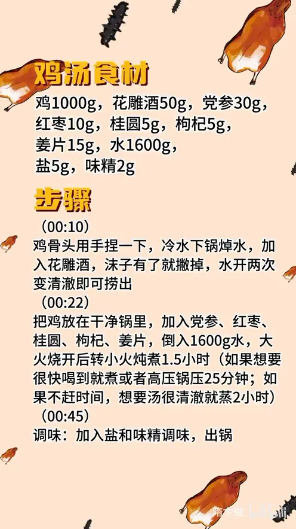

炖鸡汤
隋卞一做。1000g 整鸡冷水下锅焯水、撇净浮沫，配党参、红枣、桂圆、枸杞、姜片，加 1600g 水大火烧开后转小火炖 1.5 小时，出锅前只放 5g 盐、2g 味精。
原视频：https://www.bilibili.com/video/BV1S1xLemEra
食材
鸡、党参、姜片 等 10 样
| 类别 | 用料 | 用量 |
|---|---|---|
| 主料 | 鸡 | 1000g |
| 焯水 | 花雕酒 | 50g |
| 配料 | 党参 | 30g |
| 配料 | 红枣 | 10g |
| 配料 | 桂圆 | 5g |
| 配料 | 枸杞 | 5g |
| 配料 | 姜片 | 15g |
| 汤水 | 水 | 1600g |
| 调味 | 盐 | 5g |
| 调味 | 味精 | 2g |
步骤
- 焯水：鸡骨头用手捏一下，冷水下锅焯水，加入 50g 花雕酒；有沫子就撇掉，水开两次、汤水变清澈即可捞出。
- 下锅炖：把鸡放进干净锅里，加入 30g 党参、10g 红枣、5g 桂圆、5g 枸杞、15g 姜片，倒入 1600g 水，大火烧开后转小火炖煮 1.5 小时。
- 按时间调整：想很快喝到，就直接煮或高压锅压 25 分钟；不赶时间、想要汤色很清澈，就蒸 2 小时。
- 调味：加入 5g 盐、2g 味精调味，出锅。
小贴士
- 焯水要水开两次、汤变清澈再捞出，鸡汤才不腥不浑。
- 盐和味精最后放，汤味更清甜。
讲解要点
难度：★☆☆☆☆（几乎不会失手，注意撇净浮沫、别让汤大滚）
为什么这么做
- 骨头先用手捏一下：骨节捏开，热更容易透到里面，同样的时间熟得更快。
- 冷水下锅焯水、加花雕酒：水温慢慢升，血水和杂质才跟着析出来；酒去腥，沫子撇掉汤才不腥不浑。
- 水开两次、汤变清澈再捞：第一次开撇的是血沫，再开一次沫子撇净，汤底才清。
- 换个干净锅、只放药材和姜片：焯水的锅里全是沫子，接着炖汤必浑；姜片压住鸡的腥气。
- 小火炖 1.5 小时：这么大的鸡时间短了肉不烂、汤也不出味；着急喝就高压锅压 25 分钟。
- 想汤更清就用蒸：蒸的时候汤不翻滚，杂质不会被打散，汤色自然清澈。
- 盐和味精最后放：炖的过程中放盐，肉容易紧、汤的鲜味也发钝；最后调一次味最准。
容易翻车
- 沫子没撇干净就换锅，汤发浑、还带腥。
- 一直大火滚，汤被搅浑，越煮越少。
- 时间不够，肉啃不动；时间过头，汤寡、肉发柴。
- 盐放早了，肉紧、汤味发死。
热评补充
- 有人用电饭锅做：鸡全腿三个，焯水洗净放电饭锅，水加到内胆 60% 以上，选蒸煮或煲汤模式；党参先煲一小时，再开盖把其余药材投进去，再煲半小时到一小时，不用明火。
原片尾卡

原片文案
AI 字幕校准稿
秋天的第一碗鸡汤，给你们安排了。在家煲汤呢，总感觉味道不对，今天给你们一个最简单、最详细的方法。
买回来的小鸡，把这骨头可以捏一下，一会熟的时候更快一点。冷水下锅焯，水里加入花雕酒，有沫子就撇，打开两开，这水一清澈就可以了。
把鸡放在一个干净的锅里边，然后加入料——具体的克数给你们写在片尾：党参、红枣、桂圆、枸杞——放入两片姜，加入矿泉水。我们选的这么大的鸡呢，最短也得一个半小时。
抓紧时间喝呢，你就煮，或者高压锅也行；你要是不着急、要想汤特别清，那就得蒸。到时间了，这会儿咱们要调味，放入盐跟味精，尝一个味，出锅了喝去吧。
好喝的。如果让我用一个词来形容这个鸡汤的话，就是合适——里面煮的所有的东西味道都能喝到，而且你能感觉到它是不多也不少的，喝着特别的舒服。秋天了，来一碗热热乎乎的，大家在家试一下。
整理自「隋卞一做」系列视频，仅供个人学习。